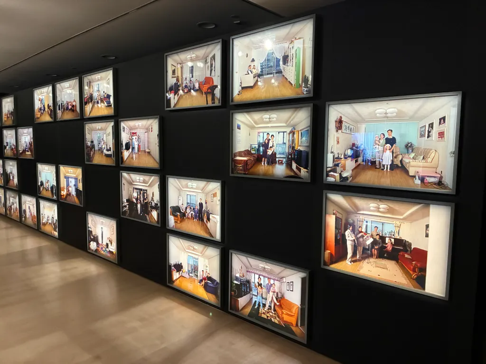
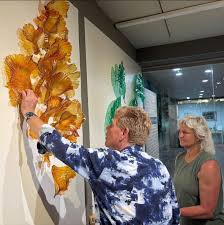

Digital Dreams
A vivid exhibition exploring identity, projection, digital memory, and immersive visual storytelling.
Reserve a ticketPittsburgh Contemporary Museum
Current exhibitions
Browse three featured exhibitions and decide what you are most interested in seeing before your visit.

A vivid exhibition exploring identity, projection, digital memory, and immersive visual storytelling.
Reserve a ticket
An exhibition where floral symbolism, layered texture, and artistic pattern systems come together.
Reserve a ticket
A dramatic exhibition focused on ritual, color, symbolism, installation, and contemporary museum design.
Reserve a ticket